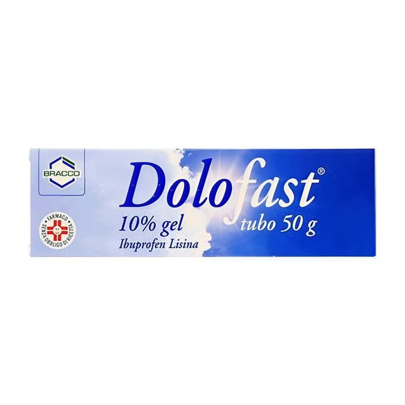

Dolofast Plus %1+%5 Jel, 50 Gram

Ne için kullanılır
KT · Bölüm 1 DOLOFAST PLUS, etkin madde olarak nimesulid ve lidokain içermekte olup, topikal (deriye sürülmek suretiyle uygulanan) kullanılan nonsteroidal antiinflamatuvar ilaçlar olarak adlandırılan ilaç grubuna dahildir. Jel formunda bir ürün olan DOLOFAST PLUS her bir masaj başlıklı tüpte %1 nimesulid ve %5 lidokain içerir. DOLOFAST PLUS, 30 gram ve 50 gram jel içeren HDPE masaj başlıklı alüminyum tüpler içinde kullanıma sunulmaktadır. DOLOFAST PLUS, aşağıdaki hastalıkların tedavisinde etkilidir; - Bel ağrısı (lumbago), eklem kireçlenmesi (osteoartrit), eklemi çevreleyen yumuşak dokunun iltihabı (periartrit), kas kiriş iltihabı (tendinit), kas, kiriş kılıflının iltihabı (tenosinovit), eklem çevresindeki keselerin iltihabı (bursit) ve spor yaralanmaları gibi burkulma ve ezilmenin eşlik ettiği yumuşak doku ve eklemlerin travmatik, dejeneratif ve romatizmal hastalıkları